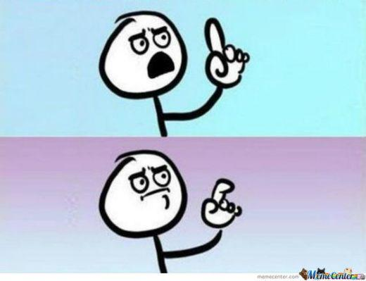
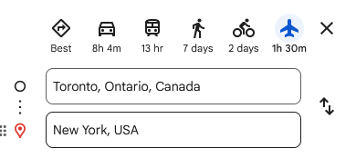

It was middle of a workday and I received a call from my dad.
“Hi, I am applying for my Canadian Tourist Visa and I will need a letter of invitation from you for my application.”
“Why don’t you use ChatGPT to help you draft one? Once it is ready, send it over and I will modify it accordingly.”
“Sounds good, will do”
After I hung up, a strange thought permeated within me. “I have become so lazy these days. Everything is now ‘ChatGPT this, ChatGPT that’. Want a letter of invitation? Sure let’s use ChatGPT for that. Want to summarize a 2000 word essay? Sure, let’s just copy and paste that in ChatGPT and let it do the grunt work.”
It is not that I couldn’t draft a letter of invitation by myself. If this was 2019, way before ChatGPT was a thing, I would have probably spent like 30 minutes looking for a template of a letter of invitation and then modify it for my needs. In fact, IRCC does provide a list of things that need to be included in an letter so it shouldn’t be a big deal.
What concerned me was something about that feeling of atrophying of ‘things that make us human’. Initially, I was thinking of calling this post ‘On AI and Laziness’. But then it occurred to me that this is not a new thing. The laziness argument has been brought up everytime there has been a technological innovation. ChatGPT and AI just happen to be the ‘Current Thing’.
Look at Spellcheck. It has been around for years and has become ingrained as part of our daily lives to a point where we don’t even have to worry about making spelling mistakes. There are a couple of moments when I accidentally misspell something and I am like “I am pretty sure it is Fahrenheit and not Fahrenhiet, but let me double check.” Once the red squiggly lines appear and I auto correct the word, I am like “Oh geez, I can’t even remember basic spellings anymore.”
I am specifically referring to that feeling.
Let’s look at another example - calculators. I am old enough to remember when calculators were prohibited in classrooms. It wasn’t until high school physics that we were allowed to use scientific calculators. The reasoning was that if we used calculators for basic arithmetic, we wouldn’t understand the logic behind it. The goal was to help students develop their reasoning and arithmetic skills. Once the student was able to demonstrate a certain level of proficiency in those skills, only then calculators were introduced. If a student knows how to multiply 456 x 84, then one can assume that the student would be able to handle more complex arithmetic operations. Eventually, we weighed the pros and cons of doing the grunt work when it comes to these arithmetic operations
| Pro | Con |
|---|---|
| The student understands the underlying logic of these arithmetic operations and will be comfortable with dealing more advanced problems in the future | Doing complex calculations takes more time and once the underlying logic has been well understood, it results in marginal benefits in terms of skill development |
Initially the pro outweighed the con. But gradually we were like “Does it really make sense for Tim to spend 5 minutes solving 506738 x 456435 when he could be spending that time working on something else?”
The last bit of ‘spending time working on something else’ is a defining feature of innovation. The premise behind innovation is that it will help us be a lot more efficient. The argument is it will help us save time, so that we can spend time doing something else. By definition, technology is something that we design that is supposed to help us. Invention of wheel made it easier for our ancestors to move things around. Something that would had taken 2 hours of commute, now took 30 minutes. Industrial Revolution and assembly lines facilitated the same trend. People were now spending less time doing grunt work thanks to machines, which resulted in massive productivity gains.
But then another thought comes to my mind that says “What are we going to do with all that time in the world? Where does this end?”
It reminds me of the bit from The Office where Kevin decides to Small Talk
Kevin starts omitting words from his regular speech because “why waste time say lot word when few word do trick?”. He thinks that he will be able to save so much to “see world”. Pam’s response on how this will result in a “microscopic amount of time saved” is exactly how I feel about the “technology will save us time” argument.
Let’s say writing an original letter of invitation without using ChatGPT would had taken me 30 minutes from start to finish. With ChatGPT, I was able to get a final product in 5 minutes. In total, it saved me 25 minutes of grunt work which means I can do something else in those 25 minutes such as do my laundry, clean the dishes, have a call with my friend and so on.
In theory, this line of reasoning sounds about right. But in reality, the difference in time saved is marginal. The thing with current AI systems is that they are not perfect. It’s not that I can realistically expect ChatGPT to produce a perfect letter for me. It will take me a couple of prompts to make the final product tailored to my needs.
So I keep asking myself, “What will I do with those 3 minutes saved by using ChatGPT?”
My argument lies on the assumption that AI systems are always going to stay the same as they are today. In reality, it is more likely that ChatGPT 7.0 is going to superior than what we have today. This means eventually, efficiency gains would be far greater than what we currently have.
To get some clarity, I came up with a hypothetical thought experiment.
Let’s assume sometime in a distant, utopian future where AI is resulting in productivity gains like nothing we have ever witnessed. Virtually all the bottlenecks in our systems have been eliminated. The question is now no longer about reducing inefficiencies but rather about what do we do now that we are more than efficient?
I posed this question to my brother and we had a good discussion about it.
“You live close to work right?”
“Yeah, it takes me 15 minutes to be at my desk.”
“That’s good, right? Now imagine if you had a 30 minute commute everyday.”
“Yeah it wouldn’t be ideal.”
“What do you in those 15 minutes you saved?”
His response left me like:

It is true that in 24 hours, 15 minutes is a nothingburger yet I still have a strong preference for it.
Let’s say if I have to go get my groceries from the market that is 5 minutes away from where I live. I could simply walk to the market or I can take my car. I am pretty sure most would argue that me taking my car to grab a dozen bananas is me just being lazy. Not only that, but I am being more wasteful with the resources and I am missing out on the opportunity to get my daily steps. But let’s say if I had to travel all the way to New York. Here are my options:

I could do a 7 day expedition by foot (which would be fun!), rent a bike and pedal my way for 48 hours (which would be a great workout in itself) or simply hop on a plane from Billy Bishop and arrive at JFK in 90 minutes. Now all of a sudden, the consensus would be to take a plane. Suddenly we don’t care about being wasteful or getting our daily steps? I mean I could do that and no one would stop me but ‘common sense’ would dictate that it’s not the wisest thing to do.
How we define laziness in the context of technological innovation is very subjective. It’s the classic ‘glass half-full/half-empty’ scenario. Today’s laziness is tomorrow’s efficiency. It boils down to what makes sense at that point in time. Had this been 19th century, we wouldn’t be having this conversation because commercial planes were not a thing yet. So my only option would had been to walk all the way to New York. In the 21st century, I would come off as a technological luddite if I resist innovation just for the sake of resisting. What changed in these two examples?
We collectively weighed the pros and cons of the two scenarios (going to a local market vs going to New York). The cons of taking a car to a market far outweigh the pros. But when it comes to New York, it is the other way round.
Maybe AI is going to follow a similar trajectory? There may come a point in time, when we as a society collectively decide that the pros of using AI will far outweigh any cons.
But it still doesn’t explain the feelings of atrophy that we have. Maybe there is more to the story.
Josh Waitizkin, one of my favorite individuals and the author of The Art of Learning had some interesting takes on this topic. Recently, he was describing the Elo system used to rank players in the world of chess. Grandmasters like Magnus Carlsen are rated around 2800. This number dwarfs in comparison to the Elo ratings of some of the more advanced AI systems like Stockfish that are around 3700. He believes eventually we will have to deal with the possibility of having 3700 rated ‘everything’. What do we do then?
He thinks that we as humans can’t accept the fact that eventually we won’t be the apex intelligence running things around. He gives an example from Thomas S. Kuhn’s The Structure of Scientific Revolutions. Imagine you are a classic Newtonian physicist. You have spent your entire life working on it. And then suddenly we have a new field of Quantum Mechanics. To embrace this new field, you have to admit to yourself and everyone else that the work you did is outdated. That’s where the ego comes in which manifests in the form of internal resistance we have to overcome to embrace the new paradigm.
This leaves us with two options. We can either continue to resist these changes as they are happening or simply accept the reality that there may come a time in future where AI outsmarts us in everything. As I have mentioned before, no one knows if it is going to happen or when its going to happen. But for the sake of argument, let’s assume it does. What do we do then?
Josh says that we will have to cultivate a child-like humility and curiosity towards things. The way I look at it is that we should look for ways to live with these changes rather than being dogmatic about them. Instead of latching on to things, a fundamental question we should be asking is ‘what are we trying to solve?’
Is the goal to be an expert speller or be a great communicator? If Spellcheck allows us to get our ideas across more easily, is it really a bad thing? It’s not that either of those goals are right or wrong. It’s just that the former made sense a while ago and it served its purpose. Now that things have changed, our goals have evolved too.
And maybe we aren’t supposed to figure out what the future is going to look like? Maybe it is just something we will never be able to comprehend. Truth is, technological advancements are so much greater and faster than biological advancements. We are so limited in our ability to evolve that we will always end up playing catch-up with technological innovation. In the book The Nineties, the author Charles Klosterman brings up an interesting idea. If you took a person from 1950 and then dropped them into 1990, it wouldn’t be too hard to explain everything. Tvs, music on discs, computers and phones all existed in the 1950s. But taking a person from 1990 and then plopping them into 2025 would require some serious explanation. Yes, I mean just start with phones. Yes, people still have phones. But most don’t have a home phone anymore. They have this electronic brick that they never let out of their sight which has access to the internet and isn’t used for talking most of the time. Music isn’t on discs much anymore, you stream it on the internet. I could go on, but you get the idea. Our ancestors would be puzzled about this prospect of an interconnected world and maybe that’s what we are currently dealing with right now.
Maybe it is not laziness after all? Maybe it is our tendency to resist change that is really at play here? But isn’t change the only constant? Sometimes, we tend to overlook the good that happens because of these changes. Think of individuals who deal with speech impairment and learning disabilities like dyslexia. While we may be bemoaning the fact that our writing skills are atrophying, advancements in educational technology are offering new ways to bridge accessibility gaps and provide meaningful support for millions of individuals around the world. Shouldn’t we be celebrating this? Isn’t this a net positive for the society? I am sure Utilitarians would argue that if technology results in the greater good, it would make sense to pursue it.
I will part by sharing some Stoic wisdom but then I am reminded me of what Marcus Aurelius had to say about change
Frightened of change? But what can exist without it?
What’s closer to nature’s heart? Can you take a hot bath and
leave the firewood as it was? Eat food without transforming
it? Can any vital process take place without something being
changed?
Can’t you see? It’s just the same with you—and just as vital to nature.